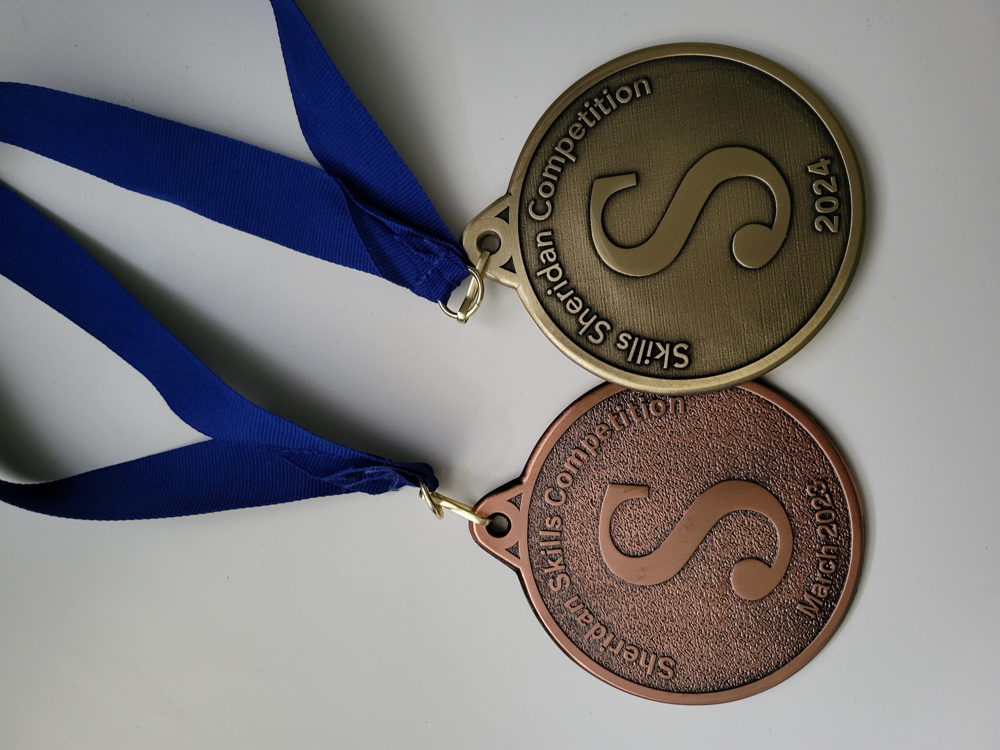
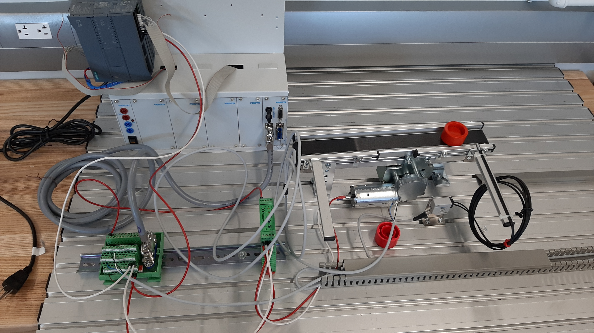
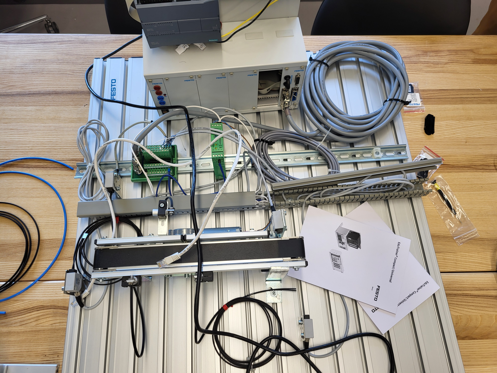
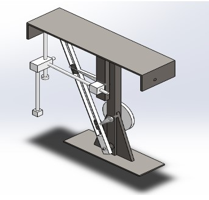

I am a graduate of with a Bachelors of Mechanical Engineering, currently trying to pursue my P.Eng license. Throughout my academic journey, I have been involved in several labs and projects, including winning first place at the Skills Sheridan Competition for Mechatronics design and fabrication. I also have a keen interest in CAD, machining, and 3D printing.
My Skills
Excellent manufacturing skills with experience working in a machine shop. Including but not limited to; soldering, welding, sand blasting, capable of using lathe, milling machines, and all hand tools.
Excellent with ABB robot programming, and simulation, with indept experience using both a teach pendant, and RobotStudio. Proficient with C programming, able create data bases and data structures.
Proficient with SolidWorks, with knowledge of FEA simulations, heatflow analysis, etc and AutoCAD.
Proficient with PLA 3D printing and mathematical modelling.
Projects
Skills Sheridan Competition
Competed in two consecutive years, and placed 3rd and 1st place. Premise of the competition is to design and fabricate a FESTO module, based on a given performace specifications with specified functions in under three hours. Design challenges includes but is not limited to; moving workpieces of differring materials to differring lengths, and holding that position for a few seconds before ejecting the work piece.



Autonomous CNC Milling Rover
Able to cut hand-drawn profiles on a piece of plywood, includes a robust vision system to detect the hand-drawn profiles on a workpiece, relies on wired power connection via line voltage and can make cuts of up to 1/8". Relies on four 5 to 1 planetary gearboxes for motion of the rover, Uses four mechanum wheels for omni directional movement, and zero degree cuts. To drive the four motors, the rover uses three custom made PCB's two of which contain two motor drivers each, while one contains only one motor driver, primarily used to adjust the dept of the cut.
Autonomous Blinds
Uses an STM32F429ZI board as the brain of the system, control of the automated blinds is dependent on the user's phone. To ensure that the blind coils properly, the team designed a few 3D printed parts. These parts consist of a motor housing and a blind spool for the blinds to coil into. The blinds will either descend in the morning and ascend in the evening or ascend in the morning and descend in the evening. The choice is solely dependent on the user, as the user can directly control whether the blinds retract extend or holds its current position.
Pick and place Mechanism
Designed and fabricated a pick and place mechansim capable of moving loads of upto 15 lbf. Uses a belt drive mechanism is powered by a motor with the assistance of a belt to drive a pulley. This mechanism causes a slider to reciprocate, in turn causing the same slider to oscillate back and forth, due to its attachment to another link. As a result, this oscillating motion is transferred to a spring through a second reciprocating mechanism. Henceforth, the oscillation transferred through the slide causes the spring to compress and decompress, which in turn causes the pick and place part to move back and forth.

FESTO Project
Revolves around designing and implementing the integration of three previously created subsystems: Handling, Sorting, and processing. Part ingress is controlled by the handling subsystem, which consists of a pneumatic rotating arm eqiupped with a vacuum to pick and place parts. Subsequently, leading to the sorting of metallic and plastic workpieces at the sorting subsystem, conducted using a sorting actuator arm, an inductive sensor to detect metallic pieces, a light curtain, and two retro-reflective sensors. Plastic parts are then processed by the drilling subsystem.